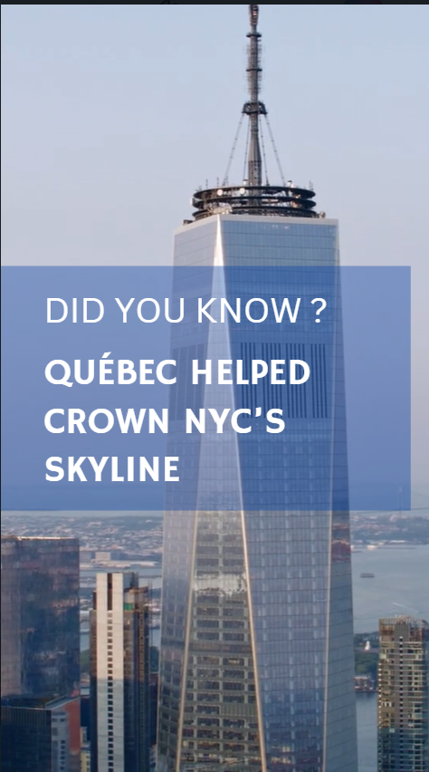

Strategic Monitoring
Prepared monitoring and research on U.S. political and economic developments affecting Quebec interests.
Public Diplomacy
During my internship at the Quebec Government Office in New York, I supported public affairs, communications, and digital diplomacy initiatives connected to Quebec's presence in the U.S. Northeast.

This experience strengthened my ability to work at the intersection of government communications, strategic monitoring, public diplomacy, and content strategy.
The Quebec Government Office in New York represents Quebec's interests across the U.S. Northeast, supporting relationships in business, culture, education, public affairs, and diplomacy.
My work focused on helping make Quebec's economic, cultural, and political priorities more visible and accessible to international audiences.
Scope
Public affairs and strategic communications support.
Social media and digital diplomacy content.
Media, policy, and regional monitoring.
Key Projects
I supported communications around Quebec's presence in New York, including digital content, public affairs research, and institutional visibility initiatives.
Contributions
Prepared monitoring and research on U.S. political and economic developments affecting Quebec interests.
Contributed to communication briefs and materials for public affairs work.
Supported content creation for digital communications and international audiences.
My Role